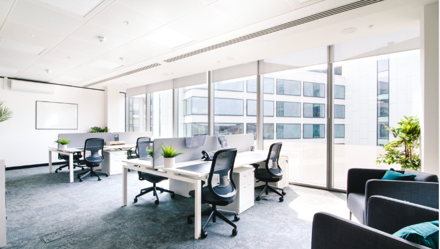

Senior Internal Audit Manager
17+ years of expertise delivering uncompromising integrity, risk mitigation, and strategic insights across Manufacturing, F&B, and FMCG industries globally.
An all-rounded Internal Audit professional with an extensive track record covering finance, operation, taxation, ITGC, and compliance audits. With an academic foundation in Civil Engineering from the UK, I bring a highly analytical, structural approach to complex corporate problem-solving.
As a fast and eager learner, I adapt rapidly to changing business landscapes, ensuring corporate governance frameworks not only meet regulatory demands but also drive tangible operational efficiencies.
CPA
Canada & Australia
CISA
Exam Passed
AI Prompting
Google Essentials
B.Eng (Hons)
Civil Engineering, UK

Areas of Practice
Establishing Business Continuity and Crisis Management policies. Structuring internal control matrices to mitigate operational risks across complex global supply chains.
Deep-dive analyses into CAPEX, MU refinements, and procurement. Proven track record of generating $1M+ performance improvements and massive fee savings.
Evaluating cybersecurity measures based on NIST. Proficient in SAP, Power BI, Generative AI & LLM, enabling digital transformation in audit workflows.
Aug 2024 - Present
Vancouver, Canada
Dedicated to international relocation, advanced technical training (CISA, AI Prompting), and industry thought leadership via bi-monthly professional blogging.
Jan 2023 - Jun 2024
Sa Sa International Holdings Ltd. (SEHK: 178)
Aug 2021 - Jan 2023
Lee Kum Kee Group